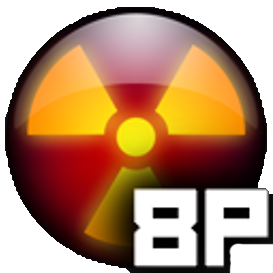

Added troubleshooting guide in case people crash randomly during game as sometimes the necessary C++ redistributables are missing or have corrupted .dll files
Added an outline texture for blip.bmp so it does not show an error texture if unit outlines are turned on
Fixed color picker window getting longer when a vote is active
Graphical option to display population/dead in three ways (thousands/millions/individuals)
Graphical option to toggle display of travel nodes and AI markers so that you don't have to edit the preferences.txt each time
Added a unique message to display when trying to select empty bomber launch mode when it is disabled, similar to an invalid DEFCON level message
Fixed Yokohama appearing in the wrong place in Japan
Edited travel nodes around Svalbard to make commanding units near it less likely to take long ways around for no good reason
Edited travel nodes around Indonesia to make the Karimata Strait traversable, connecting the Java Sea to the South China Sea
Edited some coastlines for Borneo, will be adjusted some more in the future
Fixed Jerusalem not appearing
Fixed Sapporo not appearing
Standardized sailable.bmp to avoid future annoyances with inconsistent edges
Fixed the outline stretching slightly below ghosted units

Version 2.x.8 Update
August 4, 2024
Changed territory distribution based on opinions from more experienced players, now the setup is near identical to the original aside from splitting asia into west and east, and adding Oceania
Packaged some 7-player and 8-player setups for testing
Version 2.x.7 Update
July 28, 2024
Created three builds (temporarily) for 8, 10, and 16 players
Redid version schema
Added a bomber launch option that allows for launching without a nuke loaded
Added a color picker in the alliance window for quickly swapping to the desired color - you can't swap to colors in use and if you're in an alliance, more than half must vote for the change
Made the alliances window open in the center of the screen
Slightly increased the height of the graphics option window to allow space for the new graphical options
Version 2.x.3 Update (formerly 1.3)
July 21, 2024
Added support for 16 different team colors
Added option for unit outlines in graphics settings to make them easier to see against the water
Changed unit ghost texture so that it is hatched. This makes ghosts distinct from the light gray team color
Packaged a temporary 7-player setup until we can get arbitrary numbers of players working
Version 2.x.2 Update (formerly 1.2)
July 14, 2024
Changed the game base from DEFCON to MINICOM
Undid MINICOM's feature which stored preferences and authkey files in Documents/My Games
Reformat and clean up MINICOM's packaged vanilla reversion mods, they will be the only mods packaged from the start
Removed Cold War: 8 Players and All Cities: 8 Players from the package, they will be available on the modlist
Removed Panic Key dropdown in Options since functionality was removed in Prerelease v1.1
Added a game option which lets you scale the number of units in a game. Mostly intended to allow cancelling out more units on a larger world scale
Moved Discord splash message to localization files and given proper translations instead of being hardcoded to English
Fixed bug where the last language in the options menu would display twice
Version 2.x.1 Update (formerly 1.1)
July 7, 2024
Removed the panic button/boss key as it doesn't have a real use and just confuses people unfamiliar with it
Added a custom icon to the program to differentiate it from vanilla DEFCON
Fixed right-facing airbases/carriers/subs from having offset smallnuke/smallbomber/smallfighter sprites (bug that popped up in Prerelease v1.0)
Moved modified game resources into a new data directory instead of having to activate a companion mod
Packaged a modified version of All Cities mod with the build
Packaged an 8-Player Cold War mod by FasterThanRaito with the build
Gave Sakhalin to Russia's territory
Gave Cuba, Hispaniola, Puerto Rico, and Jamaica to North America
Shaved some territory off of southern Spain to avoid Europe placing in Morocco
Changed travel nodes around the Carribean islands to allow for naval passage into the Gulf of Mexico and the Carribean Sea
Deleted Kermanshah, Iran from the cities list as it is the same city as Bakhtaran
Changed the Rolling Demo to show 8 players instead of 3
Added an installation video guide
Version 2.x.0 Update (formerly 1.0)
June 30, 2024
Added two new player colors, pink and purple
Added support for eight teams in the lobby and in-game
Changed the maximum number of teams in the server display window to eight to properly show empty/full player slots
Relabelled team "Turq" to "Cyan"
Changed territories to accommodate new teams: North America, South America, Europe+Greenland, Russia+Kazakhstan, Middle East+North Africa, Sub-Saharan Africa, South Asia+Oceania, and East Asia
Various minor changes to territories, such as cleaner borders and sensible territory inclusion
Changed travel nodes around the Philippines to allow passage around and into the South China Sea rather than straight through
Added travel nodes to connect through the Bering Strait to allow easier passage
Rounded out China's coastline so that random cities don't appear to be in the middle of the Taiwan strait
Rebalanced populations by metropolitan area, changes are minor but city data should be more accurate proportionally
Changed the capital for the Philippines to Manila instead of Quezon City
Fixed bugged cities in Algeria and Benin, they now show properly instead of random British cities
Fixed Vladivostok, Miami and Copenhagen not placing properly
Added Pyongyang to the cities file for North Korea
Moved Jeddah onto land so that it does not appear to be in the middle of the Red Sea
Moved San Francisco closer to the west coast of the United States
Moved Las Vegas to its proper place, it was east of Santa Fe before
Deleted a duplicate entry of St. John, New Brunswick
Deleted a duplicate entry of Manila, Philippines
Deleted Oroumich, Iran from the cities list as it is the same city as Rezaiyeh
Deleted Kananga, Zaire from the cities list as it is the same city as Luluabourg
Cities which previously included a province or state in its name no longer do so
Renamed certain cities with bizarre spellings and formatting
Unabbreviated USA and USSR when country names are displayed, now they are simply displayed as "United States" and "Soviet Union"
North and South Korean cities properly display "North Korea" and "South Korea" instead of just "Korea"
North and South Vietnamese cities display "North Vietnam" and "South Vietnam" instead of just "Viet Nam"
Shortened various country names in city data that were unnecessarily long (East Germany, Libya, Syria, Cambodia)
Post-Soviet states have all their cities properly marked as their respective country rather than just the capital and major cities
Renamed Ho Chi Minh City to Saigon and marked it as a capital so that it would not get overwritten by Phnom Penh during city placement
Added DEFCON Discord link as splash text
Updated each localization to properly display color text and tutorial text for correct matchups
Changed text for DEFCON version on main menu to display build version and developers